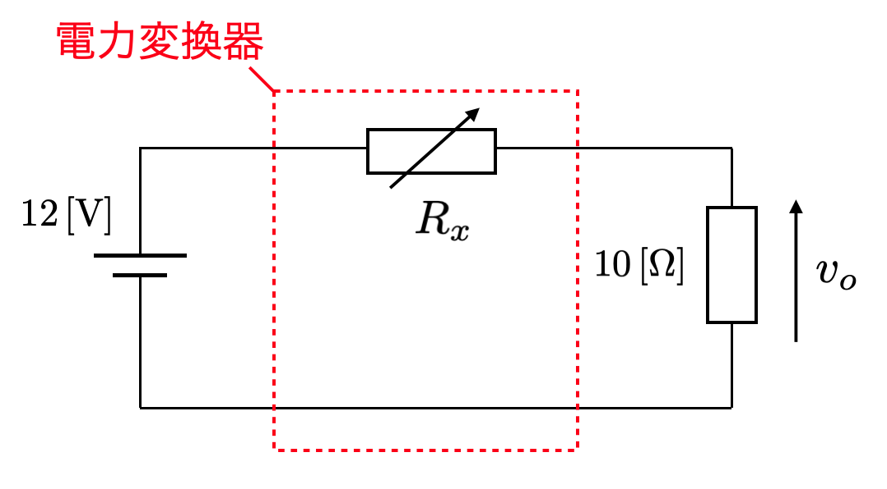
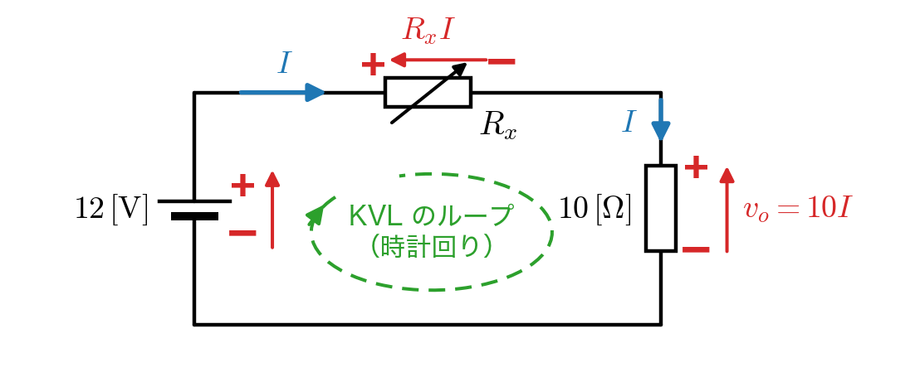
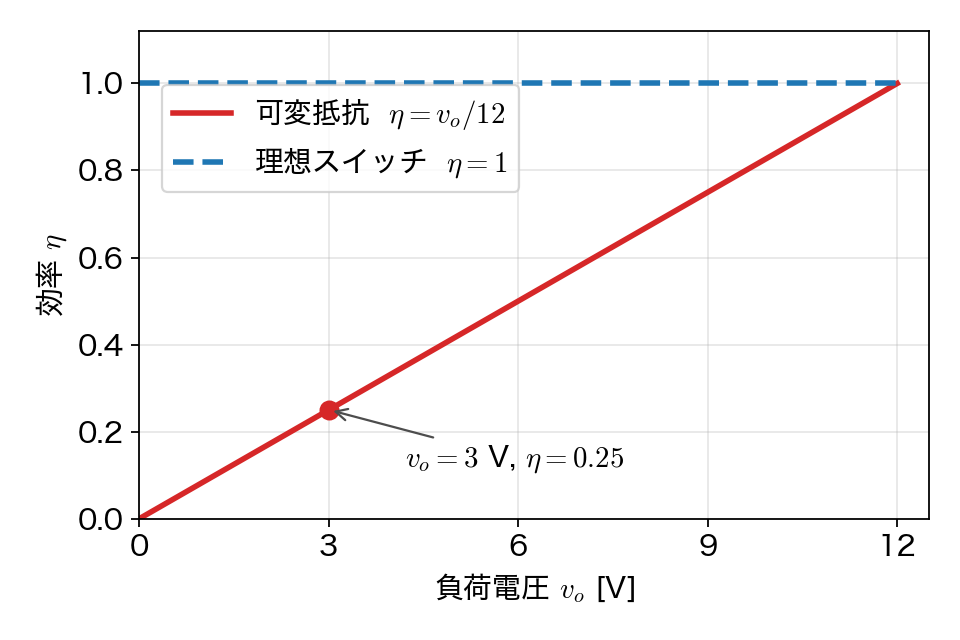
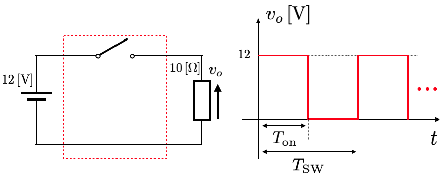
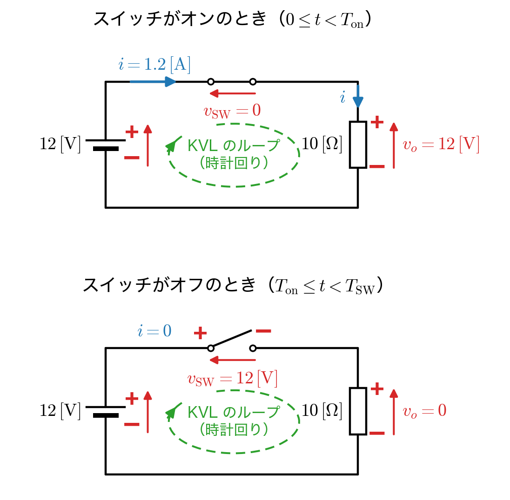
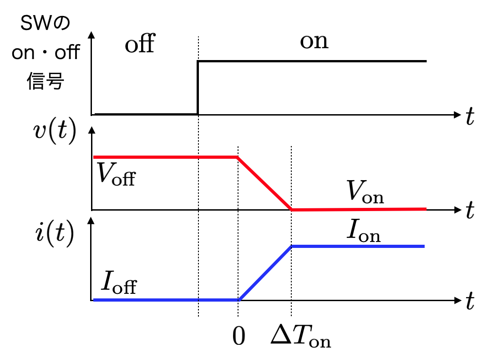
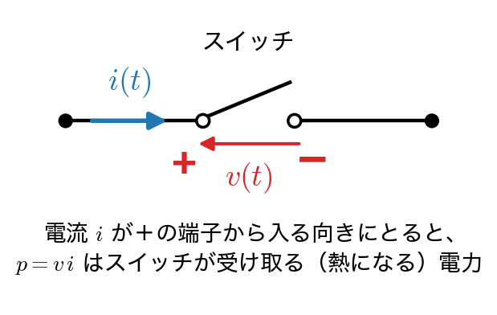
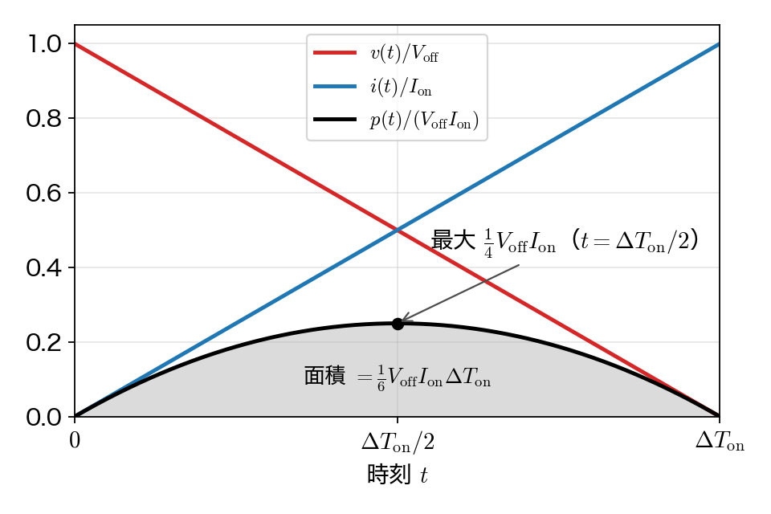

みなさんの解答を読んで共通して気になった点をまとめます。
共通の改善点
次回に向けて
🗒️ 第1回は「抵抗で電圧を落とすと損ばかり、スイッチで切り刻めば理想的には損がない、でも実際のスイッチは切り替わりの瞬間に損をする」という流れを、手を動かして確かめる問題です。問題1と問題2は同じ $12\,[\mathrm{V}]$ と $10\,[\Omega]$ で、どちらも負荷の電圧を（平均で）$3\,[\mathrm{V}]$ にしているので、効率を並べて比べてもらうのがねらいです。
解答は、総評に合わせて「回路図（電流の向き・電圧の極性・周回するループ）→ 使った法則 → 式」の順で書いています。左に縦線のついた行が、そのすぐ下の式の根拠です。
下記の回路は $12\,[\mathrm{V}]$ の直流電圧源と $R_x\,[\Omega]$ の可変抵抗と $10\,[\Omega]$ の抵抗が直列で接続されている。可変抵抗の抵抗値を変化させることで、負荷にかかる電圧を変化させることができる。以下の時に答えよ。

負荷にかかる電圧を $3\,[\mathrm{V}]$ にしたい。この時、可変抵抗を何 $\Omega$ にすれば良いか求めよ。
まず回路図を描いて、電流と電圧の向きを決めておきます。回路に流れる電流を $I$ とし、電源の＋から出て $R_x$、負荷の順に時計回りに流れる向きにとります。抵抗では電流が入ってくる側が＋になるので、$R_x$ は左が＋、負荷は上が＋です。問題1の4つの小問は、全部この図で考えます。

オームの法則より（$R_x$ と負荷の電圧）
$$v_{R_x} = R_x I, \qquad v_o = 10 I$$KVL（電源 → $R_x$ → 負荷 → 電源 のループを時計回りに周回）より
電源で $12\,[\mathrm{V}]$ 上がって、$R_x$ と負荷で $R_x I$ と $10I$ だけ下がって元に戻るので、
$$12 - R_x I - 10 I = 0$$オームの法則より（負荷の電圧 $v_o = 3\,[\mathrm{V}]$ から電流を求める）
$$10 I = 3 \quad\Rightarrow\quad I = 0.3\,[\mathrm{A}]$$これを KVL の式に入れると、
$$12 - 0.3 R_x - 3 = 0 \quad\Rightarrow\quad 0.3 R_x = 9 \quad\Rightarrow\quad R_x = 30\,[\Omega]$$可変抵抗に $9\,[\mathrm{V}]$、負荷に $3\,[\mathrm{V}]$ で、足して $12\,[\mathrm{V}]$ になり、KVL を満たしています。
負荷にかかる電力 $P_\mathrm{out}$ を求めよ。また、この電力変換の効率 $\eta$ を求めよ。
解答1-1 の回路図で考えます。負荷は上が＋、電流 $I$ は＋の側から入っているので、電圧と電流の積が負荷の受け取る電力です。
電力の式 $P = vI$ より（負荷）
$$P_\mathrm{out} = v_o I = 3 \times 0.3 = 0.9\,[\mathrm{W}]$$オームの法則 $v_o = 10I$ を入れた $P = RI^2$ で計算しても $10 \times 0.3^2 = 0.9\,[\mathrm{W}]$ で同じになります。
効率は、電源が出した電力のうち、負荷まで届いた割合です。直列回路なので、KCL より電源から出る電流も負荷と同じ $I$ です。
電力の式 $P = vI$ より（電源）
$$P_\mathrm{in} = 12 \times 0.3 = 3.6\,[\mathrm{W}]$$効率の定義より
$$\eta = \frac{P_\mathrm{out}}{P_\mathrm{in}} = \frac{0.9}{3.6} = 0.25$$つまり $25\,\%$ です。残りの $2.7\,[\mathrm{W}]$（$= 30 \times 0.3^2$）は可変抵抗で熱になって捨てられています（電源の $3.6\,[\mathrm{W}]$ ＝ 負荷の $0.9\,[\mathrm{W}]$ ＋ $R_x$ の $2.7\,[\mathrm{W}]$）。負荷に届けた電力の 3 倍を捨てており、これが抵抗で電圧を落とすやり方の弱点です。
負荷電圧 $v_o$ を $R_x$ を用いて表せ。
解答1-1 の回路図のまま、$R_x$ を文字のまま残して解きます。
KVL（電源 → $R_x$ → 負荷 → 電源 のループを時計回りに周回）より
$$12 - R_x I - 10 I = 0 \quad\Rightarrow\quad I = \frac{12}{R_x + 10}$$オームの法則より（負荷）
$$v_o = 10 I = \frac{10}{R_x + 10} \times 12 = \frac{120}{R_x + 10}\,[\mathrm{V}]$$これは分圧の式です。$R_x = 30\,[\Omega]$ を入れると $120/40 = 3\,[\mathrm{V}]$ になって、1-1 と合います。$R_x = 0$ で $12\,[\mathrm{V}]$、$R_x$ を大きくするほど $0$ に近づきます。
電力変換効率 $\eta$ を負荷電圧 $v_o$ を用いて表せ。
解答1-1 の回路図で、電源・$R_x$・負荷は1本の道でつながっています。
KCL より（直列なので、どの素子にも同じ電流 $I$ が流れる）
電源から出る電流と負荷に流れる電流は同じ $I$ です。
効率の定義と電力の式 $P = vI$ より
$$\eta = \frac{P_\mathrm{out}}{P_\mathrm{in}} = \frac{v_o I}{12 I} = \frac{v_o}{12}$$$I$ が約分できるので、効率は負荷電圧だけで決まります。
$R_x$ で書けば $\eta = \dfrac{10}{R_x + 10}$ です。
この式が言っているのは、「出力電圧を下げれば下げるほど、効率もそれに比例して下がる」ということです。電圧を半分にしたら効率も半分、$3\,[\mathrm{V}]$ なら $1/4$。抵抗で電圧を調整する限り、この直線から逃げられません。下の図の赤い線です。

下図は $12\,[\mathrm{V}]$ の直流電圧源とスイッチと $10\,[\Omega]$ の抵抗が直列で接続されている。ここで、スイッチをオンオフすることで、負荷にかかる電力を調整する。以下の問いに答えよ。

スイッチング周波数 $1\,[\mathrm{kHz}]$ でスイッチがオンオフしている。この時のスイッチング周期 $T_\mathrm{SW}$ は何秒か求めよ。
問題2も、先に回路図を描いておきます。スイッチがオンのときとオフのときで回路の様子が変わるので、2枚に分けて描きます。2-1 は周期の定義だけで解けますが、2-2・2-3 はこの図を使います。

周期の定義（周波数の逆数）より
$$T_\mathrm{SW} = \frac{1}{f_\mathrm{SW}} = \frac{1}{1 \times 10^{3}} = 1 \times 10^{-3}\,[\mathrm{s}]$$$1\,[\mathrm{ms}]$ と書いても正解です。$\mu$ と $\mathrm{m}$ の取り違えに気をつけてください。
負荷にかかる電圧の時間平均を $3\,[\mathrm{V}]$ にするためには、オンにしている時間 $T_\mathrm{on}$ を何秒にすれば良いか求めよ。
まず、上の回路図でオンのときとオフのときの $v_o$ を求めます。
オンのとき：KVL（電源 → スイッチ → 負荷 → 電源 のループを時計回りに周回）より
$$12 - v_\mathrm{SW} - v_o = 0$$理想スイッチはオンのとき $v_\mathrm{SW} = 0$ なので、$v_o = 12\,[\mathrm{V}]$ です。電源の電圧がそのまま負荷にかかります。
オフのとき：オームの法則より（電流が流れないので $i = 0$）
$$v_o = 10 \times 0 = 0$$このとき同じ KVL の式から $v_\mathrm{SW} = 12\,[\mathrm{V}]$ で、電源の電圧は全部スイッチの両端にかかります。
時間平均の定義（1 周期で積分して周期で割る）より
$$\bar{v}_o = \frac{1}{T_\mathrm{SW}} \int_0^{T_\mathrm{SW}} v_o(t)\,dt$$オンの間だけ $12\,[\mathrm{V}]$、オフの間は $0$ なので、積分は問題の図の長方形の面積 $12 \times T_\mathrm{on}$ です。
$$\bar{v}_o = \frac{T_\mathrm{on}}{T_\mathrm{SW}} \times 12 = 12D$$ここで $D = T_\mathrm{on}/T_\mathrm{SW}$ がデューティ比です。$\bar{v}_o = 3\,[\mathrm{V}]$ にしたいので $D = 3/12 = 0.25$、したがって
$$T_\mathrm{on} = D\,T_\mathrm{SW} = 0.25 \times 1 \times 10^{-3} = 2.5 \times 10^{-4}\,[\mathrm{s}]$$$0.25\,[\mathrm{ms}]$ や $250\,[\mu\mathrm{s}]$ でも同じです。つまり、周期の 4 分の 1 だけオンにします。
負荷にかかる平均電力を求めよ。また、この電力変換の効率を求めよ。ここで、スイッチは理想的なものとする。
上の回路図のオンのとき・オフのときで、負荷の電流を求めます。
オンのとき：オームの法則より（2-2 の KVL で $v_o = 12\,[\mathrm{V}]$）
$$i = \frac{v_o}{10} = \frac{12}{10} = 1.2\,[\mathrm{A}]$$オフのときは回路が切れているので $i = 0$ です。
電力の式 $p = v_o\,i$ と、時間平均の定義より
$$\bar{P}_\mathrm{out} = \frac{1}{T_\mathrm{SW}} \int_0^{T_\mathrm{SW}} v_o(t)\,i(t)\,dt$$オンの間の電力は $12 \times 1.2 = 14.4\,[\mathrm{W}]$、オフの間は電圧も電流も $0$ です。よって
$$\bar{P}_\mathrm{out} = \frac{T_\mathrm{on}}{T_\mathrm{SW}} \times 12 \times 1.2 = 0.25 \times 14.4 = 3.6\,[\mathrm{W}]$$電力の式 $P = vI$ より（電源。KCL より電源の電流も負荷と同じ $i$）
電源は、オンの間だけ $12\,[\mathrm{V}]$ で $1.2\,[\mathrm{A}]$ を流しているので
$$\bar{P}_\mathrm{in} = 0.25 \times 12 \times 1.2 = 3.6\,[\mathrm{W}]$$効率の定義より
$$\eta = \frac{\bar{P}_\mathrm{out}}{\bar{P}_\mathrm{in}} = \frac{3.6}{3.6} = 1$$効率 $100\,\%$ です。上の回路図のとおり、理想スイッチはオンのとき電圧が $0$、オフのとき電流が $0$ なので、スイッチでの電力 $v_\mathrm{SW} \times i$ はいつも $0$。だからどこにも損失が出ません。上の図の青い破線で、平均電圧をいくつにしても効率は 1 のままです。これがパワーエレクトロニクスがスイッチを使う理由です。
ひとつ気をつけてほしいのは、平均電圧は問題1と同じ $3\,[\mathrm{V}]$ なのに、負荷の電力は $0.9\,[\mathrm{W}]$ ではなく $3.6\,[\mathrm{W}]$ になっていることです。電力は電圧の 2 乗に比例するので、平均電圧の 2 乗を $R$ で割っても（$3^2/10 = 0.9$）平均電力にはなりません。$v_o^2$ を平均して $R$ で割るのが正しくて、$0.25 \times 12^2 / 10 = 3.6\,[\mathrm{W}]$ です。言い換えると、この方形波の実効値は $\sqrt{0.25 \times 12^2} = 6\,[\mathrm{V}]$ です。$\bar{v}_o^{\,2}/R$ で $0.9\,[\mathrm{W}]$ と答えた人は、ここを取り違えています。
実際のスイッチは下図のようにオンオフの動作（スイッチング）に時間がかかる。その際、電圧と電流が同時に存在するため、$P = VI$ より、余分な電力を消費する。これをスイッチング損失と呼ぶ。ここでは、スイッチング損失を実際に式で表す。下記の問いに答えよ。

時刻 $0 \le t \le \Delta T_\mathrm{on}$ において、スイッチがオフからオンに入れ替わっている（ターンオンという）。この間の時刻の電圧 $v(t)$ と電流 $i(t)$ を $V_\mathrm{off},\ I_\mathrm{on},\ \Delta T_\mathrm{on}$ を用いて表せ。ここで、オン時の電圧 $V_\mathrm{on}$ とオフ時の電流 $I_\mathrm{off}$ は 0 とみなす（$V_\mathrm{on} = I_\mathrm{off} = 0$）。
問題3には回路図がないので、まずスイッチの電圧 $v(t)$ と電流 $i(t)$ の向きを決めておきます。電流がスイッチの＋の端子から入る向きにとります。こうしておくと、3-2 の $p = vi$ がそのまま「スイッチが受け取って熱にする電力」になります。

問題の波形が直線（一次関数）であることより
どちらも直線で変わっているので、傾きと切片を読めば終わりです。電圧は $\Delta T_\mathrm{on}$ の間に $V_\mathrm{off}$ から $0$ まで下がるので、傾きは $-V_\mathrm{off}/\Delta T_\mathrm{on}$、$t = 0$ で $V_\mathrm{off}$ です。電流は $0$ から $I_\mathrm{on}$ まで上がるので、傾きは $I_\mathrm{on}/\Delta T_\mathrm{on}$、$t = 0$ で $0$ です。
$$v(t) = V_\mathrm{off} - \frac{V_\mathrm{off}}{\Delta T_\mathrm{on}}\,t = V_\mathrm{off}\left(1 - \frac{t}{\Delta T_\mathrm{on}}\right)$$ $$i(t) = \frac{I_\mathrm{on}}{\Delta T_\mathrm{on}}\,t$$$t = 0$ と $t = \Delta T_\mathrm{on}$ を入れて、図の値と合っているか確かめておいてください。
1 で求めた電圧と電流を用いて、ターンオン時（$0 \le t \le \Delta T_\mathrm{on}$）の消費電力 $p(t)$ を $V_\mathrm{off},\ I_\mathrm{on},\ \Delta T_\mathrm{on}$ を用いて表せ。
電力の式 $p = v\,i$ より（電流が＋の端子から入る向きなので、スイッチが受け取る電力）
$p(t) = v(t)\,i(t)$ に 3-1 の式をそのまま入れます。
$$\begin{aligned} p(t) &= V_\mathrm{off}\left(1 - \frac{t}{\Delta T_\mathrm{on}}\right) \cdot \frac{I_\mathrm{on}}{\Delta T_\mathrm{on}}\,t \\ &= \frac{V_\mathrm{off} I_\mathrm{on}}{\Delta T_\mathrm{on}}\,t - \frac{V_\mathrm{off} I_\mathrm{on}}{\Delta T_\mathrm{on}^{2}}\,t^{2} \end{aligned}$$上に凸の放物線で、$t = 0$ と $t = \Delta T_\mathrm{on}$ で $0$、真ん中の $t = \Delta T_\mathrm{on}/2$ で最大 $V_\mathrm{off} I_\mathrm{on}/4$ になります。電圧が半分まで下がって、電流が半分まで上がったところで一番発熱している、というイメージです。式の形は展開してもしなくても、同じ関数になっていれば正解です。

ターンオン 1 回で消費するエネルギーを求めよ。これをスイッチング損失と呼ぶ。この時、スイッチング時間 $\Delta T_\mathrm{on}$ の大きさとスイッチング損失の関係を考察せよ。また、スイッチング周波数とスイッチング損失の関係も考察せよ。
エネルギー＝電力の時間積分 より
$p(t)$ を $0$ から $\Delta T_\mathrm{on}$ まで積分します。これを $W_\mathrm{s}$ とおきます。
$$\begin{aligned} W_\mathrm{s} &= \int_0^{\Delta T_\mathrm{on}} p(t)\,dt = \int_0^{\Delta T_\mathrm{on}} \left( \frac{V_\mathrm{off} I_\mathrm{on}}{\Delta T_\mathrm{on}}\,t - \frac{V_\mathrm{off} I_\mathrm{on}}{\Delta T_\mathrm{on}^{2}}\,t^{2} \right) dt \\ &= \frac{V_\mathrm{off} I_\mathrm{on}}{\Delta T_\mathrm{on}} \left[ \frac{t^{2}}{2} \right]_0^{\Delta T_\mathrm{on}} - \frac{V_\mathrm{off} I_\mathrm{on}}{\Delta T_\mathrm{on}^{2}} \left[ \frac{t^{3}}{3} \right]_0^{\Delta T_\mathrm{on}} \\ &= \frac{1}{2} V_\mathrm{off} I_\mathrm{on} \Delta T_\mathrm{on} - \frac{1}{3} V_\mathrm{off} I_\mathrm{on} \Delta T_\mathrm{on} \\ &= \frac{1}{6} V_\mathrm{off} I_\mathrm{on} \Delta T_\mathrm{on}\,[\mathrm{J}] \end{aligned}$$上の図の灰色の面積がこれです。
まずスイッチング時間との関係です。$W_\mathrm{s}$ は $\Delta T_\mathrm{on}$ に比例しています。切り替えに時間がかかるスイッチほど、電圧と電流が重なっている時間が長いので、1 回あたりの損失が大きくなります。逆に言えば、速く切り替わるスイッチを使えば損失は減らせる。高速なパワー半導体（たとえば GaN や SiC）が欲しくなる理由はここにあります。
次にスイッチング周波数との関係です。
平均電力＝1 回あたりのエネルギー × 1 秒あたりの回数 より
$W_\mathrm{s}$ は 1 回あたりのエネルギーで、スイッチング周波数 $f_\mathrm{SW}$ は 1 秒間に何回切り替えるかなので、1 秒あたりの損失、つまり平均の損失電力は
$$P_\mathrm{s} = f_\mathrm{SW}\,W_\mathrm{s} = \frac{1}{6} V_\mathrm{off} I_\mathrm{on} \Delta T_\mathrm{on} f_\mathrm{SW}\,[\mathrm{W}]$$となって、周波数に比例して増えます。周波数を上げるとインダクタやコンデンサを小さくできるので装置は小型になりますが、そのぶんスイッチング損失が増えて発熱も増える。ここがトレードオフです。ここではターンオンだけを考えましたが、ターンオフでも同じように損失が出るので、実際の損失はその合計になります。